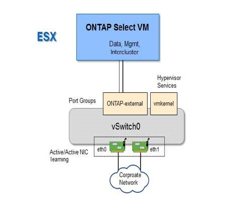
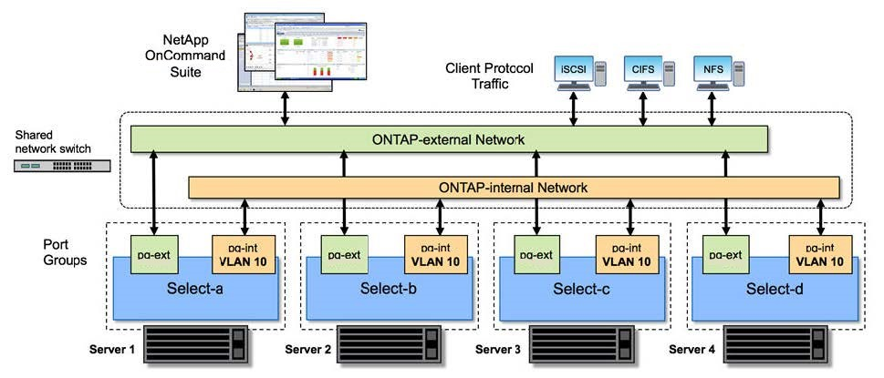
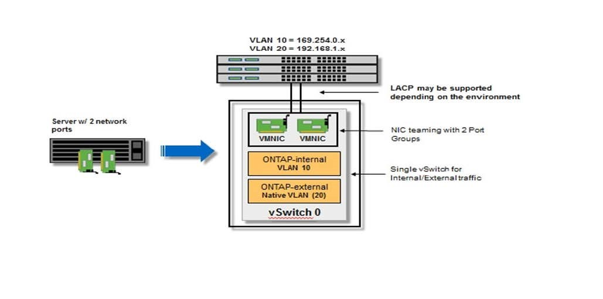

版本資訊
版本資訊
主機組態與準備檢查清單
 建議變更
建議變更
準備ONTAP Select 每個部署了一個節點的Hypervisor主機。在準備主機時、請仔細評估部署環境、確保主機設定正確、並準備好支援ONTAP Select 部署一個VMware叢集。

|
此功能不需要執行Hypervisor主機所需的網路和儲存組態。ONTAP Select您必須先手動準備每部主機、再部署ONTAP Select 一個叢集。 |
一般Hypervisor準備
您必須準備Hypervisor主機。
KVM Hypervisor
您必須準備部署 ONTAP Select 節點的每個 Linux KVM 伺服器。您也必須準備部署 ONTAP Select 部署管理公用程式的伺服器。
您必須使用 ISO 映像來安裝 Red Hat Enterprise Linux （ RHEL ）作業系統。在安裝期間、您應依照下列方式設定系統：
-
選取「預設」做為安全性原則
-
選擇虛擬化主機軟體選項
-
目的地應為本機開機磁碟、而非 ONTAP Select 使用的 RAID LUN
-
驗證主機管理介面在您啟動系統之後是否已啟動
|
|
您可以在 /etc/sysconfig/network-scripts 下編輯正確的網路組態檔案、然後使用來開啟介面 ifup 命令。
|
ONTAP Select 需要數個額外的軟體套件。套件的確切清單會因您使用的 Linux 版本而異。第一步是確認伺服器上是否有 yum 儲存庫。如果無法使用、您可以使用擷取 wget your_repository_location 命令：
|
|
如果您在安裝 Linux 伺服器期間選擇虛擬化主機做為軟體選擇、則可能已安裝部分必要的套件。您可能需要從原始程式碼安裝 openvswitch 套件、如中所述 "開啟 vSwitch 文件"。 |
For additional information about the necessary packages and other configuration requirements, see the link:https://imt.netapp.com/matrix/#welcome[NetApp Interoperability Matrix Tool^]. .RHEL 7.7 所需的其他套件 安裝 RHEL 7.6 所需的相同套件集。
使用 RHEL 7.6 或 CentOS 7.6 時、請確認已安裝下列套件和相依性。在每種情況下、都會包含套件名稱和版本。
-
QEMU-KVM （ 1.5.3-160 ）
使用軟體 RAID 時、您必須改用版本 2.9.0 。 -
libvirt （ 4.5.0-10 ）
-
openvswitch （ 2.7.3 ）
-
虛擬安裝（ 1.5.0-1 ）
-
Lshw （ B.02.18-12 ）
-
lsscsi （ 0.27-6 ）
-
lsof （ 4.87-6 ）
如果您在 KVM （外部儲存設備）上使用 vNAS 、並計畫將虛擬機器從一部主機移轉至另一部主機、則應安裝下列其他套件和相依性：
-
Fence - 代理程式 - 全部（ 4.2.1-11 ）
-
LVM2 叢集（ 2.02.180-8 ）
-
心律調整器（ 1.1.19-8 ）
-
PC （ 0.9.165-6 ）
使用 RHEL 7.5 或 CentOS 7.5 時、請確認已安裝下列套件和相依性。在每種情況下、都會包含套件名稱和版本。
-
QEMU-KVM （ 1.5.3-141 ）
使用軟體 RAID 時、您必須改用版本 2.9.0 。 -
libvirt （ 3.0.0 ）
-
openvswitch （ 2.7.3 ）
-
虛擬安裝（ 1.4.1-7 ）
-
Lshw （ B.02.18-12 ）
-
lsscsi （ 0.27-6 ）
-
lsof （ 4.87-5 ）
如果您在 KVM （外部儲存設備）上使用 vNAS 、並計畫將虛擬機器從一部主機移轉至另一部主機、則應安裝下列其他套件和相依性：
-
Fence - agents - All （ 4.0.11-86 ）
-
LVM2 叢集（ 2.02.177-4 ）
-
心律調整器（ 1.1.18-11 ）
-
PC （ 0.9.16205 ）
使用 RHEL 7.4 或 CentOS 7.4 時、請確認已安裝下列套件和相依性。在每種情況下、都會包含套件名稱和版本。
-
QEMU-KVM （ 1.5.3-141 ）
使用軟體 RAID 時、您必須改用版本 2.9.0 。 -
libvirt （ 3.2.0-14 ）
-
openvswitch （ 2.7.3 ）
-
虛擬安裝（ 1.4.1-7 ）
-
Lshw （ B.02.18-7 ）
-
lsscsi （ 0.27-6 ）
-
lsof （ 4.87-4 ）
如果您在 KVM （外部儲存設備）上使用 vNAS 、並計畫將虛擬機器從一部主機移轉至另一部主機、則應安裝下列其他套件和相依性：
-
Fence - agents - All （ 4.0.11-66 ）
-
LVM2 叢集（ 2.02.171-8 ）
-
心律調整器（ 1.1.16-12 ）
-
PC （ 0.9.158-6 ）
ONTAP Select 儲存資源池是一個邏輯資料容器、可將基礎實體儲存設備抽象化。您必須在部署 ONTAP Select 的 KVM 主機上管理儲存池。
建立儲存資源池
您必須在每個 ONTAP Select 節點至少建立一個儲存池。如果您使用軟體 RAID 而非本機硬體 RAID 、則儲存磁碟會附加至根節點和資料集合體的節點。在這種情況下、您仍必須為系統資料建立儲存池。
確認您可以登入部署 ONTAP Select 的主機上的 Linux CLI 。
ONTAP Select Deploy 管理公用程式預期儲存集區的目標位置會指定為 <pool_name> 、其中 <pool_name> 是主機上唯一的集區名稱。
|
|
LUN 的整個容量會在建立儲存池時進行分配。 |
-
顯示 Linux 主機上的本機裝置、並選擇將包含儲存池的 LUN ：
lsblk
適當的 LUN 可能是儲存容量最大的裝置。
-
定義裝置上的儲存池：
virsh pool-define-as <pool_name> logical --source-dev <device_name> --target=/dev/<pool_name>
例如：
virsh pool-define-as select_pool logical --source-dev /dev/sdb --target=/dev/select_pool
-
建置儲存池：
virsh pool-build <pool_name>
-
啟動儲存池：
virsh pool-start <pool_name>
-
將儲存池設定為在系統開機時自動啟動：
virsh pool-autostart <pool_name>
-
確認已建立儲存池：
virsh pool-list
刪除儲存池
您可以在不再需要時刪除儲存池。
確認您可以登入部署 ONTAP Select 的 Linux CLI 。
ONTAP Select Deploy 管理公用程式預期儲存集區的目標位置會指定為 /dev/<pool_name>、其中 <pool_name> 是主機上唯一的集區名稱。
-
確認儲存池已定義：
virsh pool-list
-
銷毀儲存池：
virsh pool-destroy <pool_name>
-
取消定義非作用中儲存池的組態：
virsh pool-undefine <pool_nanme>
-
確認已從主機移除儲存池：
virsh pool-list
-
確認儲存池 Volume 群組的所有邏輯磁碟區都已刪除。
-
顯示邏輯磁碟區：
lvs
-
如果池中存在任何邏輯卷，請刪除它們：
lvremove <logical_volume_name>
-
-
確認已刪除磁碟區群組：
-
顯示磁碟區群組：
vgs
-
如果集區存在某個 Volume 群組、請將其刪除：
vgremove <volume_group_name>
-
-
確認實體磁碟區已刪除：
-
顯示實體磁碟區：
pvs
-
如果集區存在實體磁碟區、請將其刪除：
pvremove <physical_volume_name>
-
ESXi Hypervisor
每台主機必須設定下列項目：
-
預先安裝且支援的Hypervisor
-
VMware vSphere授權
此外、同一個vCenter伺服器必須能夠管理ONTAP Select 叢集中部署了某個節點的所有主機。
此外、您應該確定防火牆連接埠已設定為允許存取vSphere。這些連接埠必須是開放的、才能支援序列連接埠連線ONTAP Select 至VMware虛擬機器。
根據預設、VMware允許存取下列連接埠：
-
連接埠22和連接埠1024–65535(傳入流量)
-
連接埠0–6555（傳出流量）
NetApp建議開啟下列防火牆連接埠、以允許存取vSphere：
-
連接埠7200–7400（輸入與輸出流量）
您也應該熟悉所需的vCenter權限。請參閱 "VMware vCenter伺服器" 以取得更多資訊。
叢集網路準備ONTAP Select
您可以將ONTAP Select 不完整的功能部署為多節點叢集或單節點叢集。在許多情況下、由於額外的儲存容量和HA功能、所以最好使用多節點叢集。
圖示：ONTAP Select 「示例」：「示例」
下圖說明單節點叢集和四節點叢集所使用的網路。
顯示一個網路的單節點叢集
下圖說明單節點叢集。外部網路可傳輸用戶端、管理及跨叢集複寫流量（SnapMirror/SnapVault）。

顯示兩個網路的四節點叢集
下圖說明四節點叢集。內部網路可在節點之間進行通訊、以支援ONTAP 叢集網路服務。外部網路可傳輸用戶端、管理及跨叢集複寫流量（SnapMirror/SnapVault）。

四節點叢集內的單一節點
下圖說明ONTAP Select 四節點叢集內單一物件叢集虛擬機器的典型網路組態。有兩個獨立的網路：ONTAP內部和ONTAP外部。

KVM 主機
在 KVM 主機上設定 Open vSwitch
您必須使用 Open vSwitch 在每個 ONTAP Select 節點上設定軟體定義的交換器。
確認網路管理員已停用、且原生 Linux 網路服務已啟用。
ONTAP Select 需要兩個獨立的網路、兩者都使用連接埠連結來為網路提供 HA 功能。
-
驗證主機上的 Open vSwitch 是否為作用中：
-
判斷 Open vSwitch 是否正在執行：
systemctl status openvswitch
-
如果 Open vSwitch 未執行、請啟動：
systemctl start openvswitch
-
-
顯示 Open vSwitch 組態：
ovs-vsctl show
如果主機上尚未設定 Open vSwitch 、組態就會顯示為空白。
-
新增 vSwitch 執行個體：
ovs-vsctl add-br <bridge_name>
例如：
ovs-vsctl add-br ontap-br
-
關閉網路介面：
ifdown <interface_1> ifdown <interface_2>
-
使用 LACP 合併鏈路：
ovs-vsctl add-bond <internal_network> bond-br <interface_1> <interface_2> bond_mode=balance-slb lacp=active other_config:lacp-time=fast
|
|
只有在有多個介面時、才需要設定連結。 |
-
啟動網路介面：
ifup <interface_1> ifup <interface_2>
ESXi 主機
Hypervisor主機上的vSwitch組態
vSwitch是核心Hypervisor元件、用於支援內部和外部網路的連線能力。在設定每個Hypervisor vSwitch時、您應該考量幾件事。
具有兩個實體連接埠的主機的vSwitch組態（2x10Gb）
當每個主機包含兩個10Gb連接埠時、您應該依照下列方式設定vSwitch：
-
設定vSwitch並將兩個連接埠指派給vSwitch。使用兩個連接埠建立NIC群組。
-
將負載平衡原則設定為「根據來源虛擬連接埠ID進行路由」。
-
將兩個介面卡標示為「主動」或將一個介面卡標示為「主動」、另一個標示為「待命」。
-
將「容錯回復」設定設為「是」。

-
設定vSwitch使用巨型框架（9000 MTU）。
-
在vSwitch上設定內部流量的連接埠群組（ONTAP內部）：
-
連接埠群組指派給ONTAP Select 用於叢集、HA互連和鏡射流量的E0c-e0g虛擬網路介面卡。
-
連接埠群組應位於不可路由的VLAN上、因為此網路應為私有網路。您應該將適當的VLAN標記新增至連接埠群組、以納入考量。
-
連接埠群組的負載平衡、容錯回復及容錯移轉順序設定應與vSwitch相同。
-
-
在vSwitch上設定外部流量的連接埠群組（ONTAP外部）：
-
連接埠群組指派給ONTAP Select 用於資料和管理流量的E0A-e0c虛擬網路介面卡。
-
連接埠群組可以位於可路由的VLAN上。此外、視網路環境而定、您應該新增適當的VLAN標記、或設定連接埠群組以進行VLAN主幹連線。
-
連接埠群組的負載平衡、容錯回復及容錯移轉順序設定應與vSwitch相同。
-
以上vSwitch組態適用於一般網路環境中具有2個10Gb連接埠的主機。